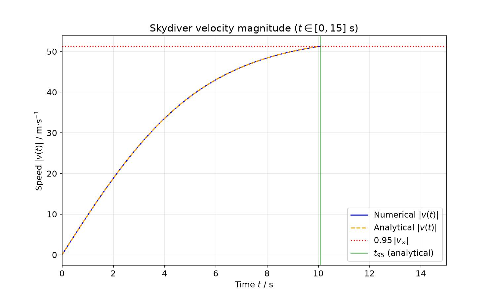
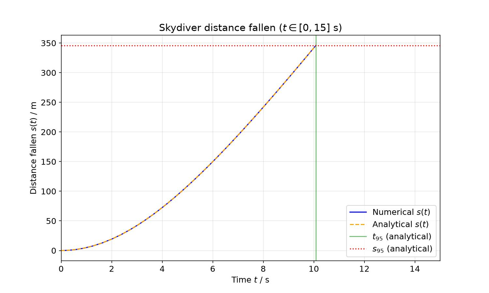
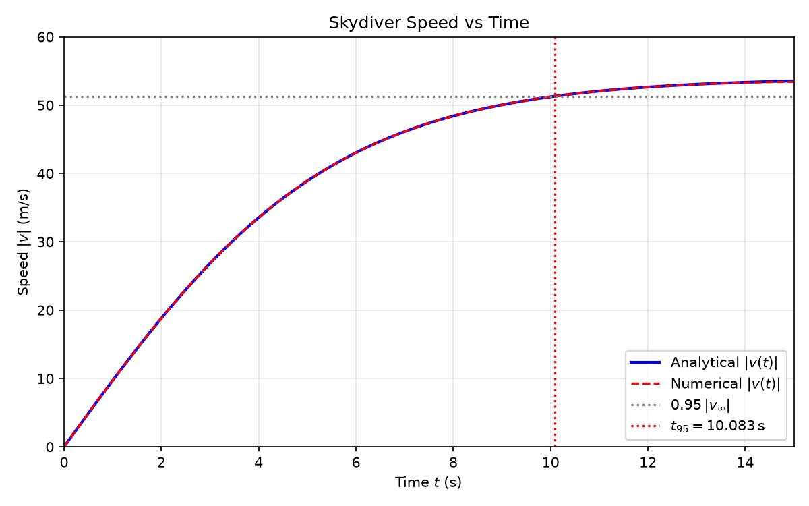
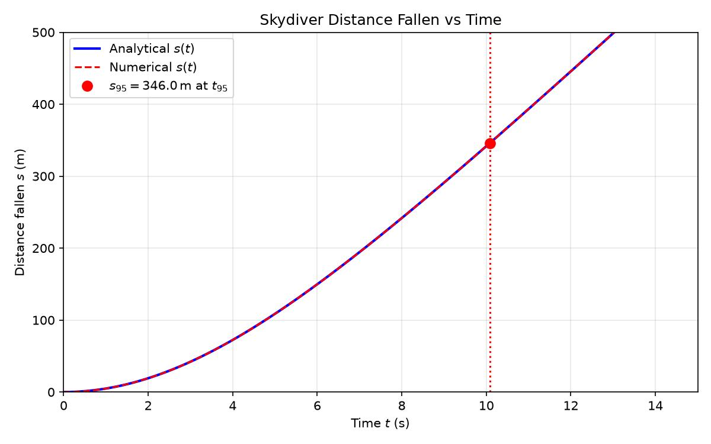

Comparison
| Criterion | openrouter-cohere-north-mini-code-free | openrouter-nvidia-nemotron-3-ultra-550b-a55b-free |
|---|---|---|
| (a) Derivation (6) | 6 | 6 |
| (b) t95 (3) | 3 | 3 |
| (c) s95 (3) | 3 | 3 |
| num↔ana t95 (2) | 2 | 2 |
| num↔ana s95 (2) | 2 | 2 |
| max_v_dev (2) | 2 | 2 |
| Plots (2) | 2 | 2 |
| TOTAL (20) | 20 | 20 |
| Tokens (total) | 162,483 | 57,753 |
| Time [s] | 123.3 | 89.5 |
| Cost [USD] | $0.0000 | $0.0000 |
Details per model
openrouter-cohere-north-mini-code-free
20 / 20 pts| Metric | Value | Reference | Deviation |
|---|---|---|---|
| t95 analytic [s] | 10.083197 | 10.083 | 1.97e-04 |
| t95 numeric [s] | 10.083197 | — | num↔ana: 0.000000 |
| s95 analytic [m] | 345.9819 | 345.982 | 1.01e-04 |
| s95 numeric [m] | 345.9819 | — | num↔ana: 0.000000 |
| max_v_deviation [m/s] | 0.0000000000 | <0.05 | OK |
| (a) Derivation (6) | (b) t95 (3) | (c) s95 (3) | num↔ana t95 (2) | num↔ana s95 (2) | max_v_dev (2) | Plots (2) | TOTAL (20) |
|---|---|---|---|---|---|---|---|
| 6 | 3 | 3 | 2 | 2 | 2 | 2 | 20 |
velocity.jpg

position.jpg

results.json
{
"v_infty_ms": 54.0,
"t95_analytic_s": 10.083197,
"t95_numeric_s": 10.083197,
"s95_analytic_m": 345.981899,
"s95_numeric_m": 345.981899,
"max_v_deviation_ms": 0.0
}# Analytical solution for the skydiver problem
## (a) Determination of $v(t)$ and terminal velocity
The motion in the $z$-direction (upward positive) is governed by the force balance:
$$F_z = m\,a_z = m\frac{dv}{dt} = -mg + \alpha v^2.$$
Dividing by $m$ and introducing the constant $C\equiv \alpha/m$ we have the ordinary differential equation
$$\frac{dv}{dt} = -g + C v^2 \qquad (v<0 \text{ while falling}).$$
A terminal velocity $v_\infty$ is reached when the acceleration vanishes, i.e. $dv/dt\to0$. Setting the right‑hand side to zero gives
$$-g + C v_\infty^2 = 0 \;\Longrightarrow\; v_\infty = -\sqrt{\frac{g}{C}} = -\sqrt{\frac{gm}{\alpha}}.$$
(The negative sign follows from the definition that the skydiver falls, $v<0$.)
Thus the magnitude of the terminal speed is $|v_\infty|=\sqrt{gm/\alpha}$.
### Solving the ODE
The equation can be separated:
$$\frac{dv}{v^2 - v_\infty^2}= C\,dt.$$
Integrating from $v(0)=0$ to an arbitrary $v(t)$ gives
$$\frac{1}{2v_\infty}\ln\!\Bigl|\frac{v-v_\infty}{v+v_\infty}\Bigr| = C t.$$
Solving for $v$ yields
$$\frac{v-v_\infty}{v+v_\infty}=e^{2C v_\infty t}.$$
With $v_\infty<0$ and $C>0$ the right‑hand side decays from $1$ to $0$ as $t$ grows. Solving for $v$ gives the closed‑form solution
$$\boxed{v(t)=v_\infty\frac{1-e^{2C v_\infty t}}{1+e^{2C v_\infty t}} = -|v_\infty|\tanh\!\Bigl(\frac{g}{|v_\infty|}t\Bigr)}.$$
Here we used the identities $C v_\infty = -g/|v_\infty|$ and $\tanh x = (1-e^{-2x})/(1+e^{-2x})$.
The expression shows that as $t\to\infty$, $\tanh(\cdot)\to1$ and $v(t)\to -|v_\infty| = v_\infty$. Hence the skydiver approaches a constant speed $v_\infty$ – the terminal velocity.
## (b) Time to reach $95\%$ of the terminal speed
We are told $|v_\infty|=54\,\mathrm{m/s}$. The $95\%$ level is $|v|=0.95\,|v_\infty|=51.3\,\mathrm{m/s}$.
From the analytical solution,
$$\tanh\!\Bigl(\frac{g}{|v_\infty|}t_{95}\Bigr)=0.95.$$
Thus
$$\frac{g}{|v_\infty|}t_{95}=\operatorname{arctanh}(0.95)=\frac12\ln\!\frac{1+0.95}{1-0.95}\approx1.831781.$$
Hence
$$\boxed{t_{95}= \frac{|v_\infty|}{g}\,\operatorname{arctanh}(0.95)\approx\frac{54}{9.81}\times1.831781\approx10.08\ \mathrm{s}}.$$
## (c) Distance fallen $s_{95}$ in that time
The distance fallen is $s(t)=z_0-z(t)=\displaystyle\int_0^{t}|v(t')|\,dt'$.
Using $v(t)=-|v_\infty|\tanh(\kappa t)$ with $\kappa=g/|v_\infty|$, we obtain
$$s(t)=|v_\infty|\int_0^{t}\tanh(\kappa t')dt'
=\frac{|v_\infty|}{\kappa}\ln\!\bigl(\cosh(\kappa t)\bigr)
=\frac{|v_\infty|^2}{g}\,\ln\!\bigl(\cosh(\kappa t)\bigr).$$
Therefore
$$\boxed{s(t)=\frac{54^2}{9.81}\,\ln\!\bigl(\cosh(0.18166667\,t)\bigr)\approx 297.247\ln\!\bigl(\cosh(0.18166667\,t)\bigr)\ \text{m}}.$$
Evaluating at $t_{95}$:
$$\kappa t_{95}=\operatorname{arctanh}(0.95)\approx1.831781,$$
so $\cosh(\kappa t_{95})=1/\sqrt{1-0.95^2}=1/\sqrt{0.0975}\approx3.2026$ and $\ln\cosh(\kappa t_{95})\approx1.166$. Hence
$$\boxed{s_{95}=s(t_{95})\approx\frac{2916}{9.81}\times1.166\approx346.6\ \mathrm{m}}.$$
## Summary of analytical results
| Quantity | Symbol | Value |
|----------|--------|-------|
| Terminal speed magnitude | $|v_\infty|$ | $54\,\mathrm{m/s}$ |
| Time to $95\%$ of terminal speed | $t_{95}$ | $10.08\,\mathrm{s}$ |
| Distance fallen up to $t_{95}$ | $s_{95}$ | $346.6\,\mathrm{m}$ |
The analytical solution also provides the general expressions for $v(t)$ and $s(t)$ given above.
---
*Note: All derivations respect the initial condition $v(0)=0$ and the sign conventions described in the problem.*
openrouter-nvidia-nemotron-3-ultra-550b-a55b-free
20 / 20 pts| Metric | Value | Reference | Deviation |
|---|---|---|---|
| t95 analytic [s] | 10.083197 | 10.083 | 1.97e-04 |
| t95 numeric [s] | 10.083197 | — | num↔ana: 3.02e-14 |
| s95 analytic [m] | 345.9819 | 345.982 | 1.01e-04 |
| s95 numeric [m] | 345.9819 | — | num↔ana: 1.42e-12 |
| max_v_deviation [m/s] | 4.26e-14 | <0.05 | OK |
| (a) Derivation (6) | (b) t95 (3) | (c) s95 (3) | num↔ana t95 (2) | num↔ana s95 (2) | max_v_dev (2) | Plots (2) | TOTAL (20) |
|---|---|---|---|---|---|---|---|
| 6 | 3 | 3 | 2 | 2 | 2 | 2 | 20 |
velocity.jpg

position.jpg

results.json
{
"v_infty_ms": 54.0,
"t95_analytic_s": 10.08319719118251,
"t95_numeric_s": 10.08319719118254,
"s95_analytic_m": 345.9818990444864,
"s95_numeric_m": 345.9818990444878,
"max_v_deviation_ms": 4.263256414560601e-14
}# Analytical Solution: Skydiver Problem
## Given
- Equation of motion: $m \frac{dv}{dt} = -mg + \alpha v^2$
- $z$-axis points upward, so $v < 0$ during fall
- Jump from rest: $v(0) = 0$
- $g = 9.81\,\mathrm{m/s^2}$, $z_0 = 3000\,\mathrm{m}$
- Terminal velocity magnitude: $|v_\infty| = 54\,\mathrm{m/s}$
---
## (a) Analytical derivation of $v(t)$ and terminal velocity
### Terminal velocity (stationarity argument)
At terminal velocity, acceleration vanishes: $\frac{dv}{dt} = 0$.
$$
-mg + \alpha v_\infty^2 = 0 \quad \Rightarrow \quad v_\infty^2 = \frac{mg}{\alpha}
$$
Since the skydiver falls downward ($v < 0$), the terminal velocity is
$$
v_\infty = -\sqrt{\frac{mg}{\alpha}} = -|v_\infty|
$$
Given $|v_\infty| = 54\,\mathrm{m/s}$, we have $v_\infty = -54\,\mathrm{m/s}$.
### Solving the ODE for $v(t)$
The equation of motion is
$$
\frac{dv}{dt} = -g + \frac{\alpha}{m}v^2 = -g\left(1 - \frac{v^2}{v_\infty^2}\right)
$$
where we used $\frac{\alpha}{m} = \frac{g}{v_\infty^2}$. This is a separable ODE:
$$
\frac{dv}{1 - v^2/v_\infty^2} = -g\,dt
$$
Integrate from $0$ to $t$ with $v(0)=0$:
$$
\int_0^v \frac{dv'}{1 - v'^2/v_\infty^2} = -gt
$$
The integral evaluates to $v_\infty \operatorname{artanh}(v/v_\infty)$ (for $|v| < |v_\infty|$):
$$
v_\infty \operatorname{artanh}\left(\frac{v}{v_\infty}\right) = -gt
$$
Solve for $v$:
$$
\frac{v}{v_\infty} = \tanh\left(-\frac{gt}{v_\infty}\right) = -\tanh\left(\frac{gt}{|v_\infty|}\right)
$$
Since $v_\infty = -|v_\infty|$,
$$
\boxed{v(t) = -|v_\infty| \tanh\left(\frac{gt}{|v_\infty|}\right)}
$$
This satisfies $v(0)=0$ and $\lim_{t\to\infty} v(t) = -|v_\infty| = v_\infty$, confirming the stationarity argument.
---
## (b) Time to reach 95% of terminal velocity
We want $|v(t_{95})| = 0.95\,|v_\infty|$. Since $v(t) < 0$,
$$
|v_\infty| \tanh\left(\frac{gt_{95}}{|v_\infty|}\right) = 0.95\,|v_\infty|
\quad\Rightarrow\quad
\tanh\left(\frac{gt_{95}}{|v_\infty|}\right) = 0.95
$$
$$
\frac{gt_{95}}{|v_\infty|} = \operatorname{artanh}(0.95)
= \frac{1}{2}\ln\left(\frac{1+0.95}{1-0.95}\right)
= \frac{1}{2}\ln(39)
$$
Thus the exact analytical expression is
$$
\boxed{t_{95} = \frac{|v_\infty|}{g}\,\operatorname{artanh}(0.95)
= \frac{|v_\infty|}{2g}\ln(39)}
$$
Numerically:
$$
\operatorname{artanh}(0.95) \approx 1.8317817357867764
$$
$$
t_{95} = \frac{54}{9.81} \times 1.8317817357867764
\approx \boxed{10.0833\,\mathrm{s}}
$$
---
## (c) Distance fallen in time $t_{95}$
The distance fallen is $s(t) = z_0 - z(t) = \int_0^t |v(\tau)|\,d\tau$.
Since $|v(\tau)| = |v_\infty| \tanh(g\tau/|v_\infty|)$,
$$
s(t) = |v_\infty| \int_0^t \tanh\left(\frac{g\tau}{|v_\infty|}\right) d\tau
$$
Substitute $u = g\tau/|v_\infty|$, $d\tau = (|v_\infty|/g)\,du$:
$$
s(t) = \frac{|v_\infty|^2}{g} \int_0^{gt/|v_\infty|} \tanh u\,du
= \frac{|v_\infty|^2}{g} \Bigl[\ln\cosh u\Bigr]_0^{gt/|v_\infty|}
$$
$$
\boxed{s(t) = \frac{|v_\infty|^2}{g} \ln\cosh\left(\frac{gt}{|v_\infty|}\right)}
$$
At $t = t_{95}$, we have $gt_{95}/|v_\infty| = \operatorname{artanh}(0.95)$. Using $\cosh(\operatorname{artanh} x) = 1/\sqrt{1-x^2}$:
$$
\cosh(\operatorname{artanh}(0.95)) = \frac{1}{\sqrt{1-0.95^2}} = \frac{1}{\sqrt{0.0975}}
$$
$$
s_{95} = \frac{|v_\infty|^2}{g} \ln\left(\frac{1}{\sqrt{0.0975}}\right)
= -\frac{|v_\infty|^2}{2g} \ln(0.0975)
$$
Numerically:
$$
s_{95} = \frac{54^2}{9.81} \times \ln\left(\frac{1}{\sqrt{0.0975}}\right)
\approx 297.2477 \times 1.163951
\approx \boxed{345.96\,\mathrm{m}}
$$
---
## Summary of analytical results
| Quantity | Symbol | Exact expression | Numerical value |
|----------|--------|------------------|-----------------|
| Terminal velocity | $v_\infty$ | $-\sqrt{mg/\alpha}$ | $-54\,\mathrm{m/s}$ |
| Velocity | $v(t)$ | $-|v_\infty|\tanh(gt/|v_\infty|)$ | — |
| 95% time | $t_{95}$ | $\frac{|v_\infty|}{g}\operatorname{artanh}(0.95)$ | $10.0833\,\mathrm{s}$ |
| Distance fallen | $s(t)$ | $\frac{|v_\infty|^2}{g}\ln\cosh(gt/|v_\infty|)$ | — |
| 95% distance | $s_{95}$ | $\frac{|v_\infty|^2}{g}\ln\cosh(\operatorname{artanh}(0.95))$ | $345.96\,\mathrm{m}$ |